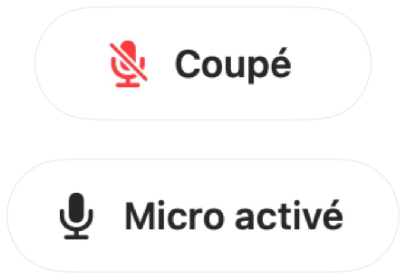

Comment couper votre micro sur un Mac avec un raccourci clavier
macOS propose une touche pour la dictée mais aucune pour couper votre micro. Chaque app d'appel a son propre raccourci, et chacun ne fonctionne que si l'app est au premier plan.
Muffle ajoute un raccourci unique qui coupe directement le micro, dans toutes les apps à la fois. Le raccourci par défaut est Contrôle-Option-M, et vous pouvez choisir la combinaison de votre choix.
Couper le micro avec un seul raccourci
- 1
Installez Muffle.
- 2
Appuyez sur Contrôle-Option-M pour couper le micro. L'icône de la barre des menus devient rouge et une brève confirmation « Coupé » apparaît.
- 3
Appuyez à nouveau pour réactiver le micro.
- 4
Pour le modifier, ouvrez les Réglages de Muffle, cliquez sur le raccourci et appuyez sur une nouvelle combinaison.

- Maintenez le raccourci enfoncé en sourdine pour parler, puis relâchez-le pour couper à nouveau le micro.
- Cliquez avec le bouton droit sur l'icône de Muffle dans la barre des menus pour couper instantanément le micro à la souris.
Questions fréquentes
Le raccourci fonctionne-t-il si l'app d'appel n'est pas au premier plan ?
Oui. Il fonctionne depuis n'importe quelle app, y compris les apps en plein écran.
Puis-je utiliser une seule touche, comme F5 ?
Oui. Les touches de fonction fonctionnent seules ; les autres touches nécessitent Contrôle, Option ou Commande.